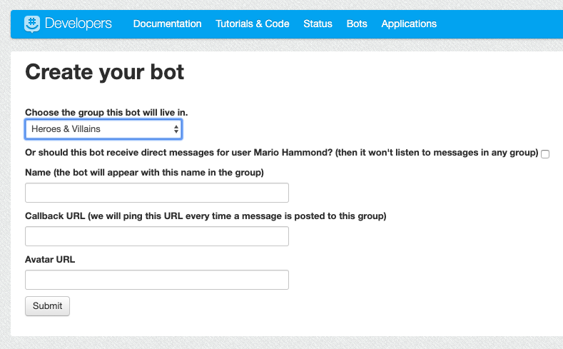
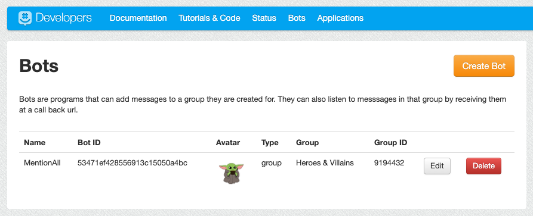
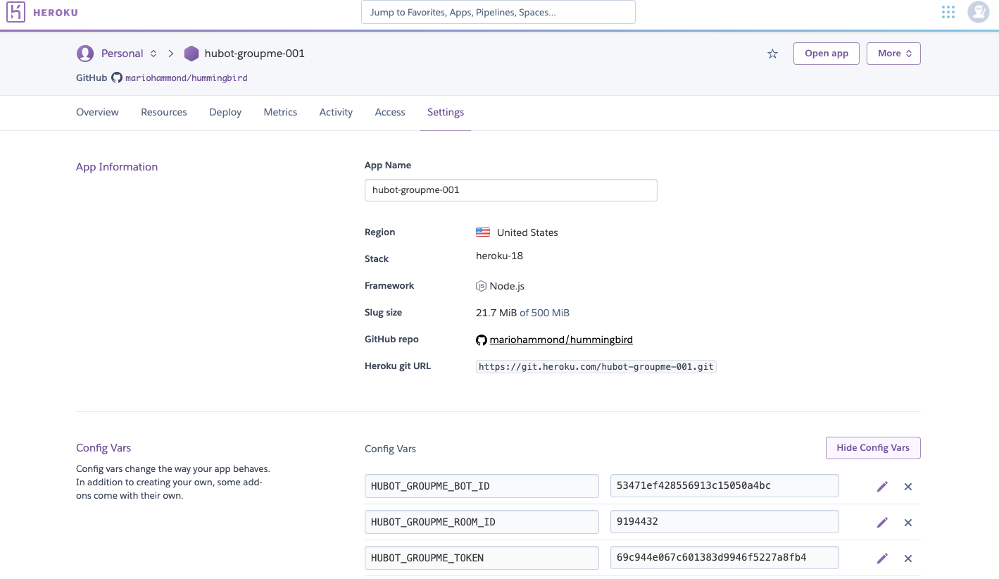
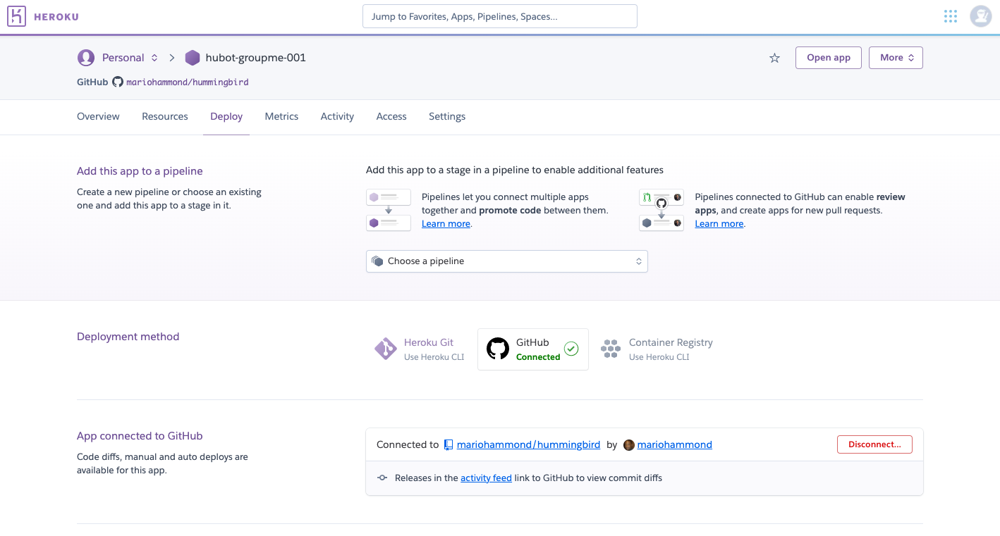

Adding the @all feature to Groupme
1. Getting Started
You need the following accounts (free):
2. Create a GroupMe application
3. Create a GroupMe bot
- Go to this site: https://dev.groupme.com/bots
- Click the 'Create Bot' button

- Choose the group and give it a name.
- Add a Callback URL (required but not important)
- Add a Avatar URL (link of an image to use in the group)
- Once you create the bot you will get a Bot ID and a Group ID. You will need those later.

4. Create a Github Repo
5. Create a Heroku site
6. Add Config Variables
- Once the Heroku app is created, go to the 'Settings' tab.
- In Settings, click on Show Config Vars
- Add the following variables:
- HUBOT_GROUPME_BOT_ID -> [Your Bot ID]
- HUBOT_GROUPME_ROOM_ID -> [Your Group ID]
- HUBOT_GROUPME_TOKEN -> [Your Access Token]

7. Deploy Your Heroku App
- Go to the 'Deploy' tab.
- In Deploy, choose the Deployment method as GitHub and connect your repo.

- Go down to the Manual deploy section and click 'Deploy Branch'
Done!